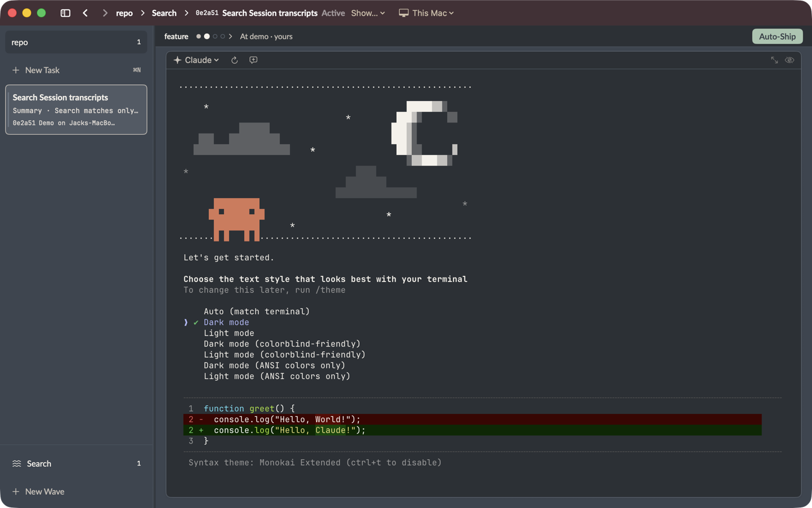
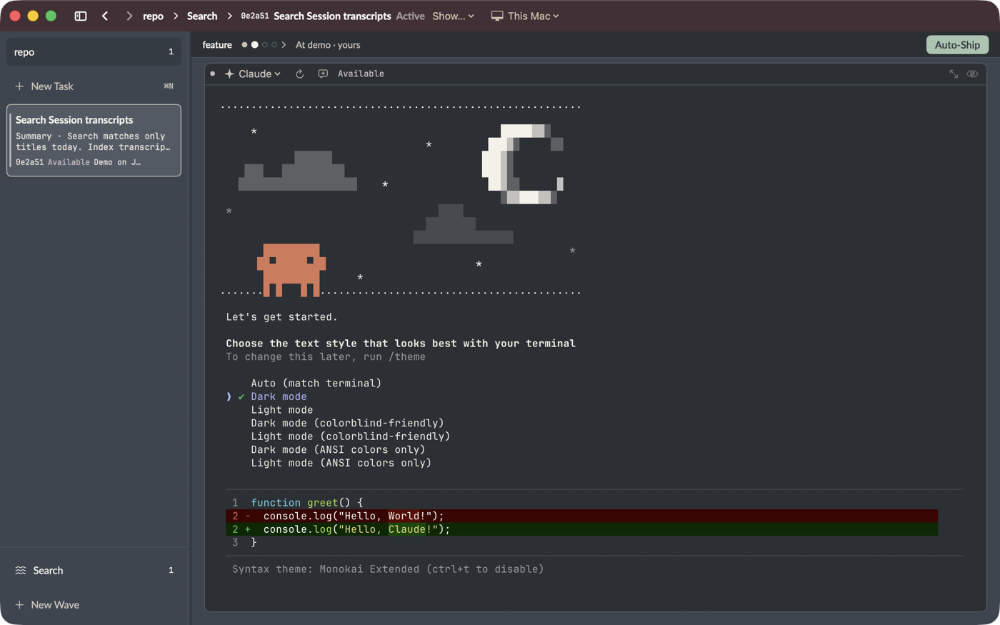
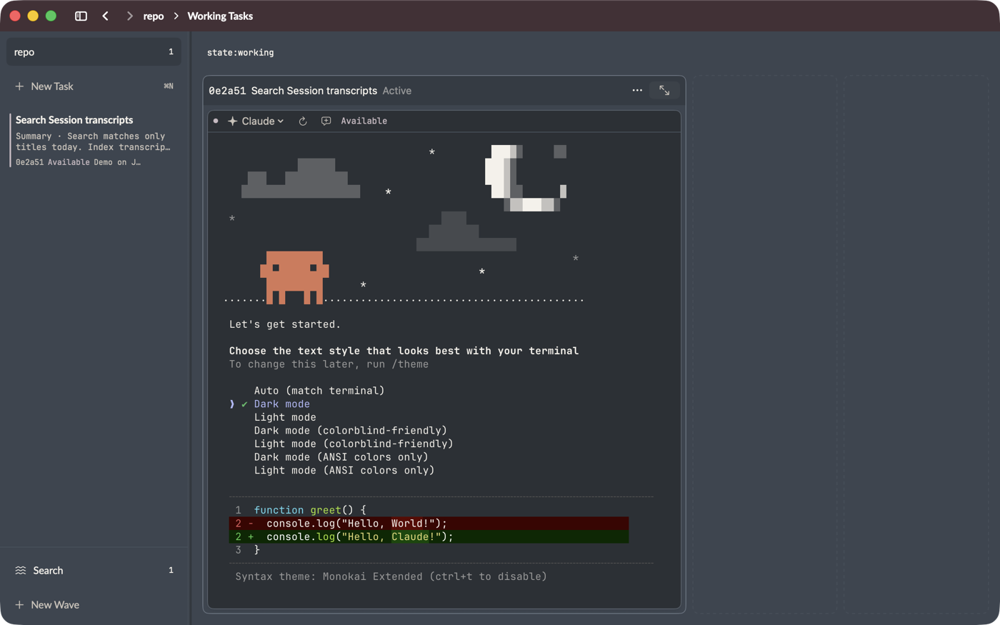
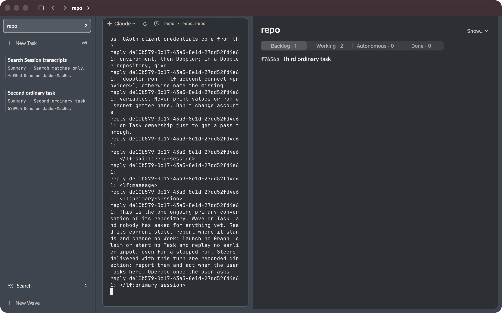
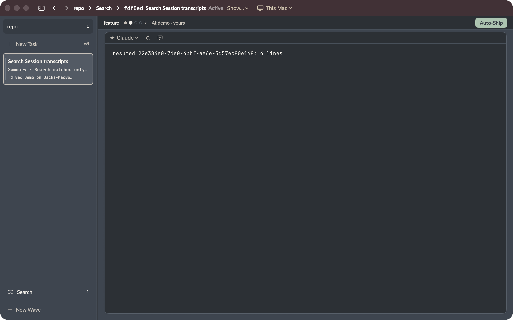
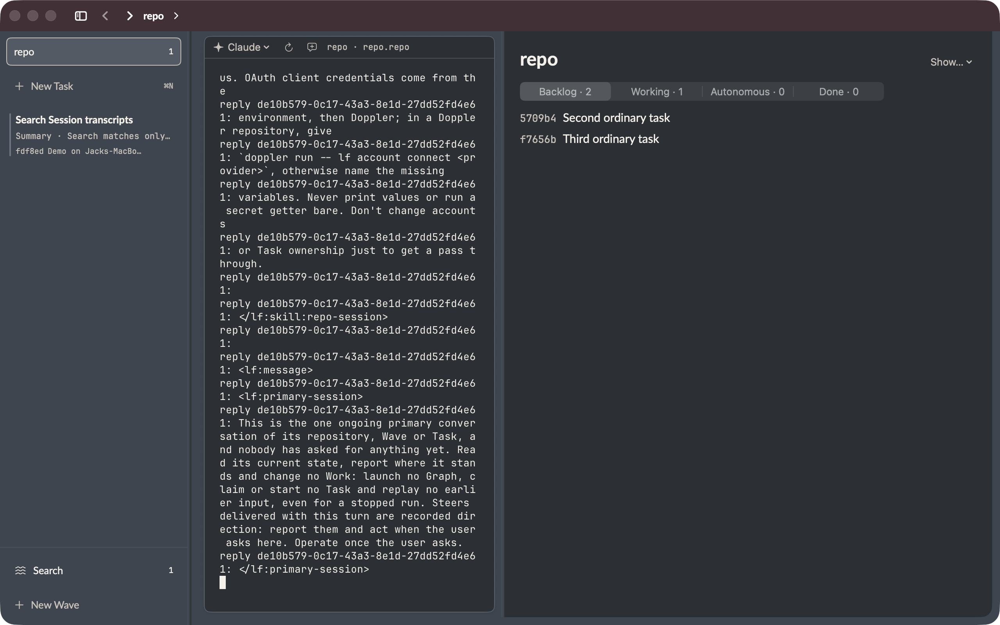
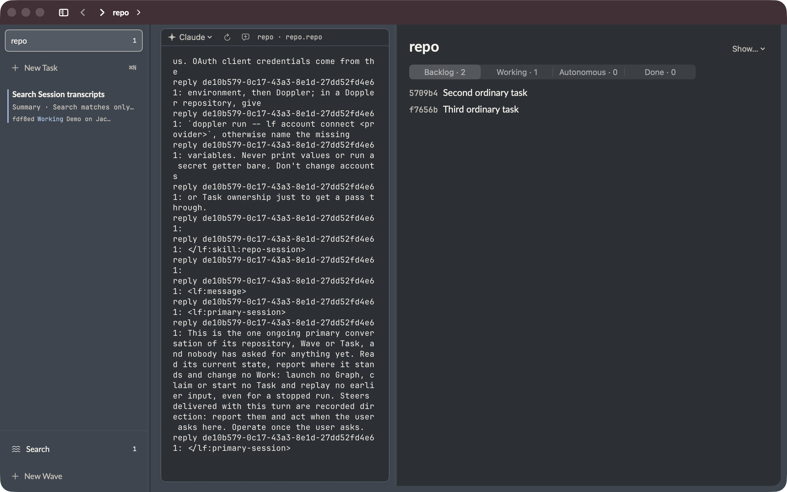
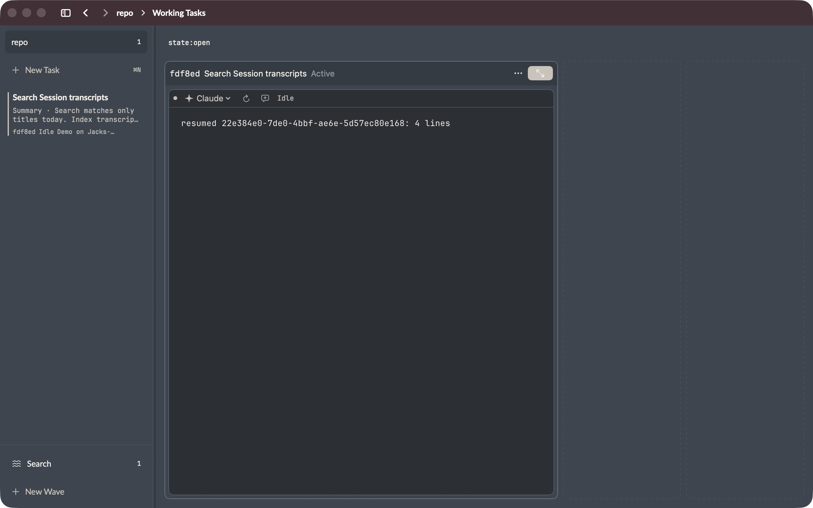

5266e24ac, after main #1861/#1945)Dev app installed from this checkout and copied to its own bundle ID (com.loopflow.mac.qa696); its bundled
lf 0.16.0+5266e24ac ran every command and the private lf server run. An lf-world one-task world
plus two Tasks moved into its Wave. The screen was locked (CGSSessionScreenIsLocked), so no screenshots and no
accessibility reads (AXIsProcessTrusted false): the window was read through lf desktop state/ls --json only.
| step | Task | planning | lifecycle | section | selection_states |
|---|---|---|---|---|---|
| start | Alpha 002131 (Graph at demo) | unstarted | active | working | open, active, working |
lf checkout | Bravo afa1c6 | unstarted | idle | working | open, idle, working |
lf task unassign Alpha | Alpha | unstarted | active | backlog | active, backlog |
lf task complete, never started | Charlie cf3dfe | completed | done | — | done (in state:done) |
Alpha's page was showing when it was unassigned. The window stayed on it, refreshed its reading (roadmap_generated_at
moved past the unassign), and the page's action stayed run, not Start. The sidebar dropped Alpha to [afa1c6];
lf task claim put it back in its saved place. The header text itself was not readable here.
lf desktop move -p afa1c6 --destination 002131 (sidebar) task_orders [afa1c6, 002131] sidebar [afa1c6, 002131] lf task list [afa1c6, 002131, cf3dfe] plan board search: afa1c6 idle working, 002131 active working, cf3dfe unstarted backlog lf desktop working-tasks; lf desktop move -p 002131 --destination afa1c6 (Dashboard tile) tiles [002131, afa1c6, wave] sidebar [002131, afa1c6] task_orders, plan board, lf task list: 002131 first
A tile drag on the Working Tasks Dashboard moves the shared order, and every ordinary list follows. Server plan.list over the
socket (desktop hello) returned the same rows in the same order with lifecycle and selection_states.
Quitting and relaunching the app kept the order, the selected Task and both states.
| report on Bravo's tty | Bravo selection_states | state:busy | state:available |
|---|---|---|---|
| none (Alpha's open conversation has none either) | open, idle, working | — | — |
| working | + busy | Bravo | — |
| idle | + available | — | Bravo |
| idle written while the server was SIGSTOPped 25 s | + available after SIGCONT | — | Bravo |
During the outage the window kept its rows (sidebar [002131, afa1c6], nothing emptied). It still reported
reading: current after 25 s of a frozen server: it has no way to tell a frozen server from a quiet one that soon. That
freshness rule is not this branch's; noted, not changed.
scripts/test_desktop.sh --jobs 4 -Xswiftc -gnone --filter 'TaskConceptTests|WorkNavigationTests|WaveStandupTests| TaskRowMetadataTests|ProgramStatusTests|TaskHistoryFilterTests|TaskStatusTests|NowProjectionTests|DesktopHeadlessTests' ✔ Test run with 117 tests in 9 suites passed after 15.220 seconds.
No product code. .lf/skills/qa.md: the app-copy note wrongly blamed launchd for the real claude; here the server was
started first and Desktop-opened conversations still ran the account's claude 2.1.325 on the world's private config (at sign-in),
while a CLI lf checkout used the stand-in. It now says so, and records the Working Tasks tile move, the missing Wave-board route
and the locked-screen accessibility limit.
Works on the merged HEAD: lifecycle survives unassign/reclaim and conflicting planning text in CLI, server and the window's Task reading; a never-started completed Task is Done; one order moves the sidebar, Working Tasks tiles, Wave board and CLI together and survives relaunch; Busy/Available follow reports, including a report sent during an outage.
Not reached: any visible text (locked screen, no accessibility): the header label, the Backlog page's offers and the row/pane wording rest on the headless suites above and round 2's screenshots. The Wave board view in the window (no socket route). Two Sessions on one Task reporting Busy and Available at once (the shared fixture covers it). Auto-Ship Restarting/Unassigned live.
Still wrong, worst first: nothing in this branch's scope. Outside it: Desktop launches the account's real claude from a
world app; reading: current holds through a short frozen-server outage.
state:open compression)Branch build with the uncommitted compression (SelectionWork.open → shared state set). An lf-world one-task
world plus one added Task, opened in a copy of the Dev app under its own bundle ID (com.loopflow.mac.qa696), so it could not
collide with the installed app or another QA app running at the same time. The disposable Git-planning Machine from round 1 was reused for CLI checks.
state:open after the compression (CLI)| step | state:open | state:backlog | state:done |
|---|---|---|---|
| start | Bravo | Alpha (started, unassigned) | Charlie |
lf task claim Alpha | Alpha, Bravo | — | Charlie |
lf task unassign Alpha | Bravo | Alpha | Charlie |
Saved Dashboards over each state, read with lf desktop view list --json. No unavailable entries. Same results as the rule before the compression.
Task page with planning unstarted and runtime active: the breadcrumb says Active, with no activity label before any report.

Writing ESC]7501;state=working to the conversation's tty: Rust selection_states gains busy, and the sidebar row and pane header say Busy.
state=idle: Rust gains available, and both the row and the header say Available. The round-1 "Idle beside Active" mismatch is gone. The label survived quitting and relaunching the app.

After lf task claim on the unstarted second Task, Rust reports it as open, unstarted, backlog. The Working Tasks Dashboard correctly
left it out, because its members are the Working section. But its caption said state:open, and typing that query selects the owned Backlog Task too.
The caption named a different query from the one the board ran.
Fixed: WorkSelection.queryText shows state:working for the repository default. lf open --host desktop now asks Desktop for
state:working (or wave:… state:working) instead of kind:task state:open, so it opens the same set as the board.
docs/surfaces.md listed stale states (running, paused); it and work/README.md now list the parser's states, and the README says how open differs from the sections.
lf desktop view show 'state:working' returns exactly the board's member. Rebuilt app:

cargo fmt --all -- --check, git diff --check, cargo clippy -p loopflow --all-targets -- -D warnings: passed. The Dev app build passed through loopflow-dev.py install.
No test covers the caption or the lf open URL expression. Gate runs the suites.
Works: lifecycle in the header for conflicting planning text. Busy/Available wording agrees between Rust, the sidebar row and the pane header, and it survives relaunch.
state:open keeps its meaning after the compression. The Working Tasks caption now names its real query.
Not reached: dragging in the window (both Tasks on one board needs a Graph run, which would have started real Claude here; see below). Round 1 checked order, and nothing since has touched it.
Still wrong, worst first:
com.loopflow.server.<hash>) with the login PATH.
So the holder ran the account's real claude (2.1.325, at sign-in) instead of the world's stand-in, for the Task, repository and Wave conversations.
A world app launched by hand doesn't keep its stand-ins.SelectionWork.state_known is always true for Task rows in production, since work_in errors on a missing state, and it is only read for Task rows.
The "state is unavailable" branches it guards are reached only by unit-test fixtures. Deleting the field and those branches is a compress-level call, left for the next step.The state-known finding is resolved: SelectionWork.state_known and its synthetic unknown-state fixture are removed.
The production reader requires every Task state and returns read errors before producing rows. Missing Work/query references and unknown activity retain their unavailable results.
Regression tests now cover the repository Dashboard caption and the Desktop workspace URL's repository/Wave expressions.
A store-reader test claims an unstarted Task and checks that Working excludes it while state:open and Backlog retain it.
Follow-up checks: 20 focused Rust tests passed. Desktop app/test build passed after supplying the required row ID in two report fixtures; the caption, five report-state cases, and conversation-versus-Task-activity checks passed headlessly.
Branch build 0.16.0+85e54627e.dirty (HEAD plus the uncommitted compress edits). Two private Machines:
a disposable Git-planning repository on the branch lf server run, and an lf-world one-task
world opened in Loopflow Dev.app with two added Tasks. Nothing touched the real ~/.lf.
Ran Alpha's Graph (- cmd: help, - interactive: demo) to its interactive step, completed Charlie
in planning without starting it, checked out Bravo, then unassigned Alpha.
| Task | planning task.state | lifecycle | section | selection_states |
|---|---|---|---|---|
| Alpha (ran, then unassigned) | unstarted | active | backlog | active, backlog |
| Bravo (checked out, owned) | unstarted | idle | working | open, idle, working |
| Charlie (completed, never started) | completed | done | done | — |
Server plan.board over the socket matches: Alpha state: active, Backlog, waiting reason
"Unassigned; nothing moves it until lf task claim or lf task run". No "Not started". Alpha's open
primary conversation with no report adds neither Busy nor Available.
$ lf desktop move -p fdf8ed --destination 5709b4 task_orders: ["task_fdf8ed…","task_5709b4…"] lf task list: fdf8ed, 5709b4, f7656b lf desktop ls: 1 fdf8ed, 2 5709b4 --json: fdf8ed:active:working, 5709b4:idle:working, f7656b:unstarted:backlog
One move puts the Task first in the store, CLI, Desktop list and sidebar. The owned but unstarted Task stays in Backlog.

The Task page breadcrumb shows Active, and the Graph strip shows "At demo · yours". After lf task unassign on
the started 5709b4, it leaves the sidebar and Working count and appears in Backlog beside the owned-unstarted f7656b.


Not seen in the window: the unassigned Task's own page (Start/Reopen offers). lf desktop enter reaches only
Working tiles, and lf desktop view/lf open would route loopflow:// to the installed app. The headless production-view
checks below cover that header from the Rust fixture.
I wrote ESC]7501;state=working, then state=idle, to fdf8ed's held conversation tty.
| report | Rust selection_states | sidebar row | board tile / pane header |
|---|---|---|---|
| none | open, active, working | no label | Active / — |
| working | + busy | Working | Active / — |
| idle | + available | Idle | Active / Idle |


Rust and the filters agree (busy → available). The sidebar row label and pane header still show the
provider's raw report through SessionProgramStatus (unchanged on this branch). An idle report reads "Idle" where Rust and the
board say Available, and it sits next to a Task whose lifecycle is Active. Task lifecycle also has an Idle state.
scripts/test_desktop.sh -Xswiftc -gnone --filter 'TaskConceptTests|WorkNavigationTests|WaveStandupTests|TaskHistoryFilterTests| TaskRowMetadataTests|TaskStatusTests|DTOFixtureTests|NowProjectionTests|DesktopHeadlessTests' ✔ Test run with 158 tests in 9 suites passed after 28.200 seconds.
No product code changed in QA. .lf/skills/qa.md now records how to reorder, navigate, screenshot and drive activity reports
in the Dev app, plus the pgrep -f self-match trap.
Works: lifecycle survives unassignment and conflicting planning text (CLI, server, Task header, board tile). A never-started planning-completed Task is Done. Shared order moves everywhere at once. Unknown activity adds no badge. Busy/Available follow reports in Rust and its filters.
Not reached: a Wave board badge with a live report; a Linear-closed started Task (git planning can't express it apart from
planning_completed); Auto-Ship Restarting/Unassigned live; the Backlog Task's page and its offers in the window. The headless suites cover these from the shared fixture.
Still wrong, worst first:
AttributeGraph: cycle detected lines in bursts during launch and navigation. Other branches' QA app logs
show 101–180 per run, so this change didn't clearly cause them.